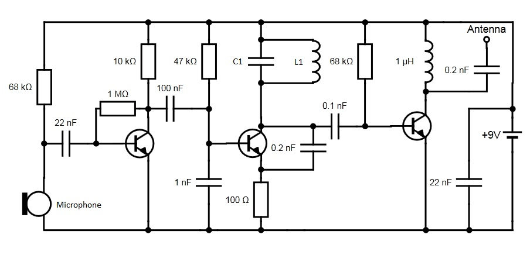
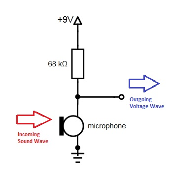
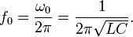

FM Radio Transmitter
I found a schematic for a short range (~100 ft) FM radio transmitter a few weeks ago and thought I'd give it a try. Building the circuit is relatively simple and can be built for around $10-15. It consists of three transistors (I used 2N3904 BJTs, although any NPN transistor should work.) Here is the schematic with all of the components you'll need labeled, with some details below:

The purpose of this project was to try to understand a larger, somewhat complex dynamic circuit using my basic knowledge of analog circuits (with the added bonus of it having a cool practical application). It takes as input a sound wave (through the microphone), and outputs a frequency modulated electromagnetic wave of the input which you can pick up with a reciever. That's a showy way of saying its a radio. Disclaimer: this project is based on personal research and the information is believed to be accurate but there is no gurantee that any of it is. I basically tried to explain it to the best of my understanding. Send me a mail if you find any inaccuracies.
The circuit works in four basic stages:
1. Turning the input sound wave into a electric signal
2. Amplifying the signal
3. Modulating the signal with a carrier frequency
4. Outputting the signal
STAGE 1: Getting the input
 First, the audio signal to be transmitted needs to be converted to an electrical signal. This is accomplished easily by putting 9V across the electret microphone and resistor in series. The output of this voltage divider is a conversion of our air pressure amplitude wave (or sound wave) to voltage amplitude wave, which is what we want.In short, sound (air pressure) fluctuations are converted to voltage fluctuations. More information on how the electret microphone converts air pressure waves into voltage waves can be found here.
STAGE 2: Preamp
The signal is AC coupled by sending the output of stage 1 through the 22nF capacitor and then is sent through a common-emitter amplifier (built around the first transistor) which amplifies the signal.STAGE 3: FM Modulation
Now we get to the cool part! The next step is to modulate the amplified signal, because the signal we have at this point is too low of frequency to be useful to radio. We need to encode the information of our low frequency signal into a higher frequency signal called a carrier frequency using process known as modulation. In radio this is done either with frequency modulation (FM) or amplitude modulation (AM), but this circuit will use frequency modulation. This video does a great job of explaining the basic concepts of FM and AM modulation.The circuit formed by L1 and C1 in parallel is a tank circuit which creates our carrier frequency. In the schematic, I left these values unspecified because the choice of the carrier is up to you. The circuit resonates at a frequency of according to

Where we L and C are the values of the inductor and capacitor and f is our carrier frequency. So if you used L1 = 30nH and C1 = 82pF your carrier frequency would be about 100Mhz. If you wanted, you could also replace C1 with a variable capacitor, so you could vary the carrier frequency on the spot. I would be careful into deviating too far from the above values, even if the C to L ratio is right the frequency you want. My thought is that if C is too big(or small) then the modulation may be affected by the relative ratio of C1 to the .2nF capacitor below it, as discussed below.
Red box: Creates carrier frequency
Green box: Modulates the carrier frequency
In this picture, the input is a standard sine wave
The peaks and troughs of the input correspond to compressions/contractions of the output wave!
The carrier, generated by the tank circuit is then modulated by the capacitor connected between the transistor's collector and emitter. By the looks of it, the modulation is caused by the competing impedences of the transistor and the capacitor in parallel.
As the input increases, more current is allowed to flow through the transistor, which shunts the .2nF capacitor, effectively reducing the total capacitance seen by L1 in the tank circuit, causing the output frequency to increase slightly (check the equation above). If the input is low, not much current flows through the transistor, so the .2nF adds to the capacitance of the LC circuit thus lowering the frequency of the output. This is frequency modulation in action.
STAGE 4: Outputting the modulated signal
After the information from the microphone has been encoded into our carrier signal, all that is left to do is to output the signal to an antenna. In between the modulator and the antenna is (I think) a buffer that shields the L/C tank from disturbances coming in through the antenna.Assembling
 As mentioned above, building this transmitter is very simple. I managed to fit the entire thing on a small prototype board. The design I was following used a 33pF capacitor for C1 and a coiled wire with 4 turns for L1 (just take a wire and coil it around a screwdriver four times). This produced a carrier of 90.7 MHz. On the right you can see a picture of the final result. It doesn't look so pretty but it worked OK. I was able to hear myself on my dad's old radio reciever, as well as my car's FM radio.
As mentioned above, building this transmitter is very simple. I managed to fit the entire thing on a small prototype board. The design I was following used a 33pF capacitor for C1 and a coiled wire with 4 turns for L1 (just take a wire and coil it around a screwdriver four times). This produced a carrier of 90.7 MHz. On the right you can see a picture of the final result. It doesn't look so pretty but it worked OK. I was able to hear myself on my dad's old radio reciever, as well as my car's FM radio.
Note: the inductance of the coil is dependent on the geometry of the coil, so you can change the inductance (and consequently the carrier frequency) by bending the coil a bit. If you choose to coil the inductor up yourself, make sure the coil is protected if you want a stable carrier frequency.
I tested the approximate range by driving around in my car while I sat the microphone down next to a TV at home. I was able to hear the output at a range of approximately 100ish feet. So, it wasn't super powerful, but that's okay. The FCC actually limits unlicensed broadcasting to 200 feet in the US according to this page, so it would be illegal for it to be much more powerful. By the way, the little green coil in the picture is L1.